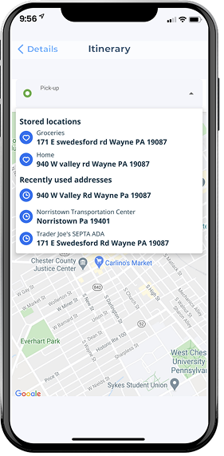
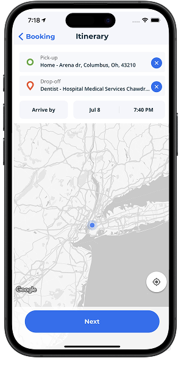
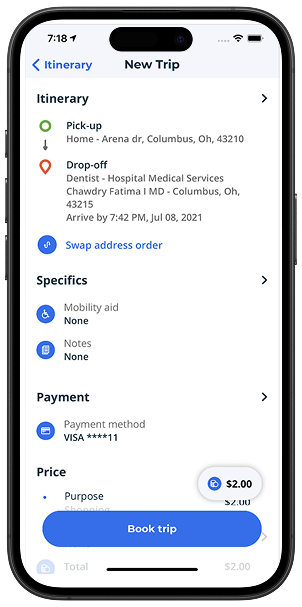
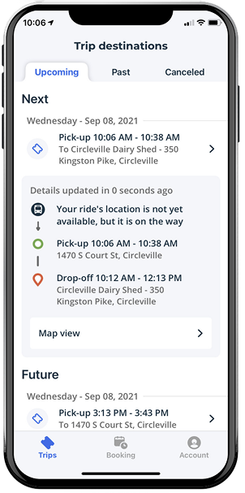
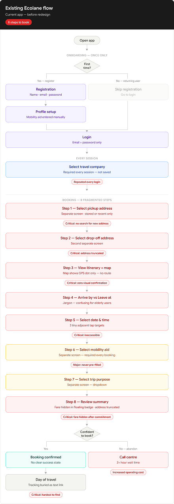
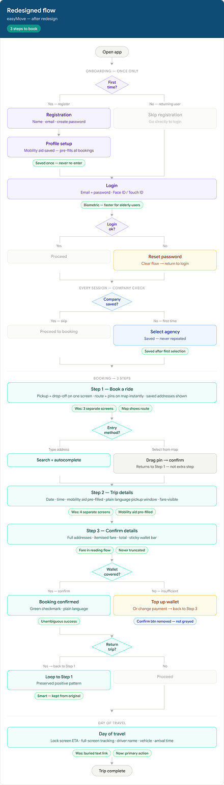
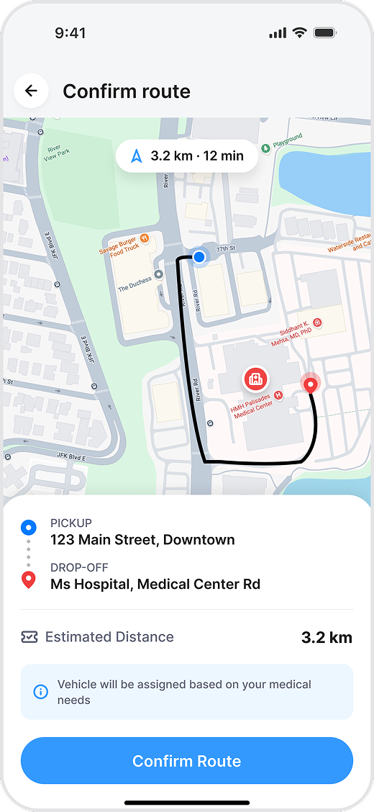
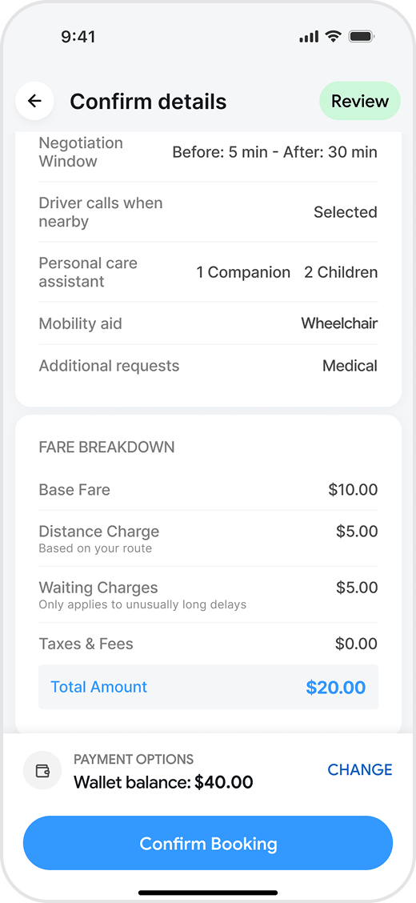
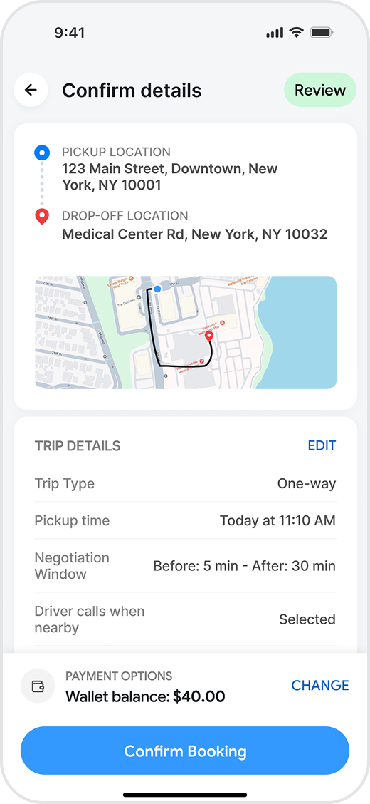
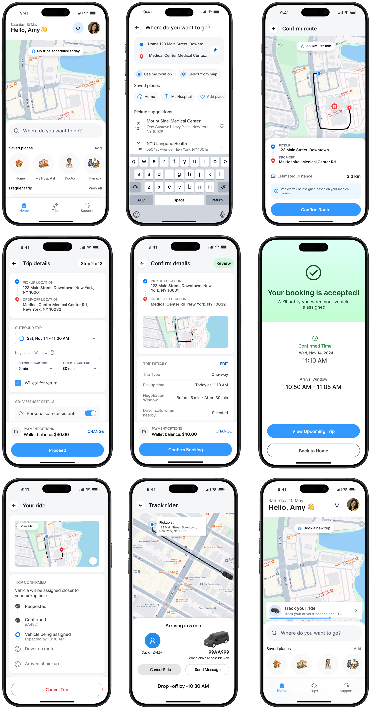

Rider App Booking Flow — Redesigning the Booking Experience for Paratransit Users
A rider-first booking experience for paratransit users—reduced to the decisions that matter, with clearer maps, accessible controls, and confident confirmations.
The redesign turns a high-friction routine into an inclusive, predictable journey for people who depend on reliable transport.


The most critical flow had grown bloated.
The booking experience is the single most critical flow in our rider application. Over successive feature additions, it had grown bloated and confusing. Passionate daily users found themselves facing unnecessary cognitive friction when executing routine trips.
This redesign recovers clean, rapid utility while respecting the visual instincts of seasoned riders.
“A routine trip booking that should take under 45 seconds was taking riders over three minutes, leading to an 18% drop-off rate at the final step.”
Frequent screen redraws, rigid sequencing, and poorly integrated maps combined to break confidence just as users were preparing to commit to their trips. The interface was asking for excessive cognitive investments where fluid, automatic system feedback was expected.
The design process
Research & insights
Riders were confronted with secondary choices before confirming primary trip routes.
of U.S. adults reported lacking reliable transportation that prevented them from getting to medical appointments or essential activities in the past year.
It was not just a UX problem. The app had a 2.1★ rating and users were calling a 2-hour phone queue instead.
Before redesigning anything, I needed to understand whether the failures were isolated screen issues or something structural. The answer came from three independent sources and all three said the same thing.
I started with a simple assumption: if this is a paratransit rider booking a ride to dialysis three times a week, every extra step is a potential no-show. That context shaped every research decision.
Paratransit isn't a niche product. It's a federally mandated service. The users are booking rides to chemotherapy, dialysis, and surgery. A confusing booking flow isn't a minor UX inconvenience—it's a public health problem.
I started with App Store reviews
The same complaints appeared repeatedly—address search failures, map crashes, and the booking flow being too complex for elderly users. 2.1★ from 66 reviews.
"It will not recognise the address of destination... the map pulls up for a split second and goes blank. When you only have limited time to put the appointment in, this is extremely frustrating."
"Poorly thought out for the most part especially for older people. They need to add a real time real person chat function."
"I can call and wait on average 2 hours to talk with someone to book it. But you honestly expect people to have that much time during their day?"
Then I looked at the version history
VoiceOver fixes, touch target patches, map crash resolutions—all added post-launch across versions 4.3.1–4.3.3 in response to complaints.
“The same issues were patched 3–4 times across multiple releases without solving the underlying structural problem.”
This wasn't a maintenance problem. It was a design philosophy problem.
10 failures across 4 screens
Most violated heuristic: visibility of system status — violated 6 times across 3 screens. Users consistently couldn't tell if their booking was registering, where their ride was, or what they were about to confirm.
8 steps to book one ride. Single-field screens for mobility aid and trip purpose fragment the flow unnecessarily. Each extra step is a drop-off point.
Both addresses entered — map shows only a GPS dot. No pickup pin, no drop-off pin, no route line. Direct cause of re-bookings and phone fallback.
Fare buried in a floating badge. Drop-off address truncated. Purpose field cut off above the CTA.
“10:06 AM–10:38 AM” shown with no explanation. For elderly users heading to medical appointments, this ambiguity directly causes no-shows.
Heart/clock icon system for saved vs. recent addresses. Return trip prompt after booking. Bottom tab navigation. These were designed well — kept in the redesign.
10 critical & major failures, annotated

Address selection
Forces the user to navigate to a second screen just to enter the second address — doubling the steps for one logical task.
The back label “Details” doesn't tell the user where they came from or where they'll go back to.
Excellent recognition pattern — users can identify saved destinations without reading labels.

Itinerary + map screen
Users don't know if this is their requested arrival time or a guaranteed window. Creates booking errors for medical appointments.
User cannot verify their destination is correct. For medical appointments this directly causes booking errors and no-shows.
Both addresses entered but no visual confirmation. User cannot verify their journey is registered correctly.
“Arrive by”, “Jul 8”, “7:40 PM” — three adjacent buttons, each under 44pt. Impossible for Dorothy with reduced motor precision.
Tapping × instantly clears a typed address with no confirmation and no way to recover it. Catastrophic for low-literacy users.

New Trip summary screen
$2.00 sits in the top-right corner outside the natural reading order. Fixed-income users commit to a booking without knowingly seeing the cost.
“›” next to Itinerary, Specifics, Payment, Price — each chevron could mean expand to see more OR tap to edit. Users can't tell.
Critical information truncated directly above the confirmation CTA. User is committing to a booking with incomplete information visible.

Trip destinations
On the day of a medical appointment, the most critical screen shows “not available” with no ETA, no fallback, no explanation.
“Map view” — the most valuable feature on travel day is a tiny underlined text link at the bottom. Dorothy may never find it.
A raw time window with no context. Users don't know if they need to be ready at 7:10 or if the driver might be late by 7:17.
User personas
Every micro-decision in this redesign was filtered through two people — a 72-year-old dialysis patient and a 45-year-old wheelchair user. Not edge cases. The primary users.
“I just want to know my ride is coming. The app confuses me so I just call — but the wait is so long.”
- Confused by the 8-step booking flow
- Small touch targets are difficult to tap accurately
- Can't visually verify her route on the map
- Jargon labels that aren't clear
- 2+ hour phone wait times
- Book rides to weekly dialysis appointments reliably
- Understand exactly when the ride will arrive
- Know the fare cost upfront before booking
- Confirm pickup and drop-off locations visually
“Why do I have to go through 8 screens just to book one ride? I do this every week.”
- 8 separate screens just to book one ride
- Mobility aid selection required every single time
- Small X buttons difficult to tap with switch access
- No booking summary to review before confirming
- Repetitive data entry that should be saved
- Book accessible rides accommodating his wheelchair quickly
- App remembers his mobility aid requirements automatically
- Review complete booking details before confirming
- Complete bookings with fewer steps
From 8 steps to 3 — and why each one was collapsed
The original flow fragmented one decision — “I want to go from A to B at this time” — into eight separate screens. Each screen became a drop-off point. The redesign consolidates everything into three intentional steps.
Both address fields on one screen. Map updates in real time as addresses are entered — showing route line and both pins immediately. Saved addresses (heart/clock icons) preserved from the original.
All trip parameters on one screen in reading order. Fare visible before commitment. Mobility aid pre-filled from Marcus's profile. Plain language pickup window replaces jargon.
Full summary — untruncated addresses, plain pickup time range, itemised fare breakdown, wallet balance with “Covered” confirmation. One CTA. No ambiguity.


Final design & UI
The polished UI features crisp geometric line work, robust touch targets, and a system font stack designed for rapid contextual reading during transit.
Every finding has a visible solution
Both addresses entered — the map renders nothing useful. Users cannot verify their journey visually. Direct cause of re-bookings and phone fallback confirmed in App Store reviews.
As soon as both addresses are entered, the map renders a route with both pins. Dorothy can see her journey to the dialysis centre before she confirms anything.

$2.00 appears in a floating badge outside the reading flow on the last screen. For users on fixed incomes, this is a fundamental trust failure.
Base fare, distance charge, waiting charge (conditional), taxes, and total — all visible in the reading flow. Wallet balance shown separately with “Covered” confirmation.

A raw time window with no context. For elderly users heading to medical appointments, this ambiguity directly causes no-shows — the most expensive failure mode for agencies.
Plain time range derived from pickup time and negotiation window. Dorothy reads an actual clock time — no formula, no guessing, no arithmetic required.

Map view buried at the bottom of the trip card. The most valuable feature on travel day — knowing where your driver is — is the hardest thing to find.
Live tracking is the primary day-of experience. Lock screen shows ETA without opening the app. Driver name, photo, vehicle, and arrival time all prominent.
Final screens

Expected impact
Reduced the booking journey from 8 steps to 3 guided decisions, making the process easier to understand and complete.
Applied accessible interaction patterns, clearer visual hierarchy, and larger touch targets to better support riders with diverse mobility and cognitive needs.
Streamlined location selection with guided search, saved locations, and map-assisted interactions to minimize user effort.
Established reusable UI patterns and a modular booking flow that can support future features such as recurring trips, companion riders, and trip modifications.
Key learnings
Riders develop deep muscle memory. Drastic UI changes should be introduced incrementally to prevent initial drop-offs from sheer layout unfamiliarity.
A booking flow isn't used in a quiet office. It's used on a rainy platform while juggling bags. Designing for extreme environment states prevents fragile UI breakdowns.
Changes to a core booking layout create cascades into driver dispatch, customer service, and receipts. Holistic designers manage downstream system side-effects.
Let's design a product people can use with confidence.
For product design, design systems, prototypes, and AI-powered design workflows.